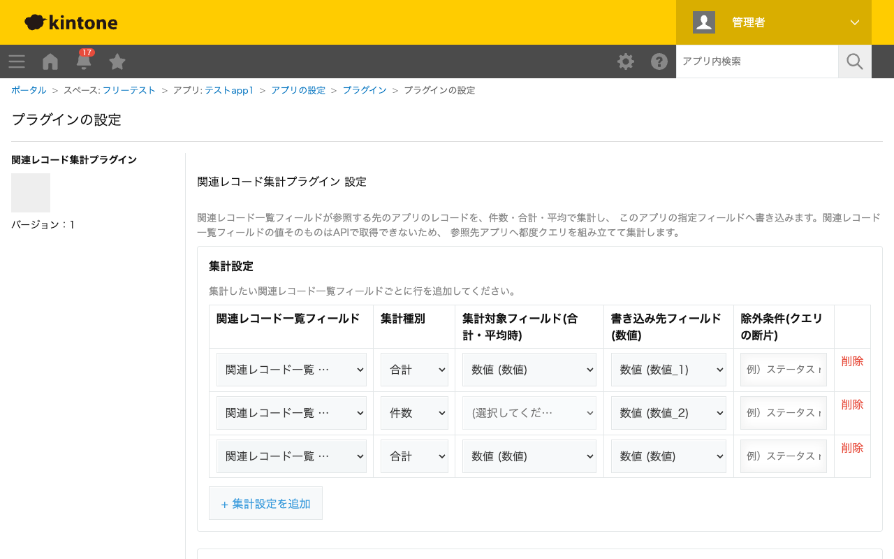

GovAppsプラグイン 安全性を確認できる無料kintoneプラグイン集
関連レコード一覧フィールドが参照している先のアプリのレコードを、件数・合計・平均で集計し、 このアプリの指定フィールド(数値)へ書き込むプラグインです。関連レコード一覧フィールドの値そのものは JavaScript API・REST APIのいずれでも取得できないため、フィールドの設定(参照先アプリ・関連付け条件・ 絞り込み条件)から参照先アプリへのクエリを自動で組み立てて集計します。
「顧客」アプリに「注文」アプリの関連レコード一覧を配置している場合に、注文件数・注文金額の合計・平均単価などを顧客レコード上の数値フィールドへ自動で反映できます。関連レコード一覧フィールドは値をそのまま集計に使えない(APIで取得できない)ため、本プラグインは同じ絞り込み条件を参照先アプリへのクエリとして再現し、参照先アプリの実際のレコードを取得・集計します。
関連レコード一覧フィールドの「表示するレコードの件数」設定(例: 5件)は画面上の一覧表示のみに影響する設定であり、本プラグインの集計はこの件数に関係なく、関連付け条件・絞り込み条件に一致するレコードを全件取得して集計します。そのため、集計結果の件数・合計が関連レコード一覧の表示件数より多くなることがありますが、これは仕様どおりの動作です。
集計のタイミングは3種類から必要なものを選んで組み合わせられます。(a)レコードの保存時に自動集計、(b)詳細画面のボタンを押したときにオンデマンドで集計・保存、(c)一覧画面のボタンで現在の絞り込み条件に該当する全レコードを対象に一括集計、です。一括集計は実行前にAPI実行回数の見積もりを表示して確認を求めます。
一括集計ボタンの表示・非表示によるグループ制限は、あくまで画面上の表示切り替えであり、真の権限制御ではありません。実際にレコードを書き換えられるかどうかは、参照先アプリ・このアプリ自体のkintoneのレコード権限設定に依存します。
kintoneセキュアコーディングガイドラインに沿って実装時にチェックしています。特に重要な点は次のとおりです。
kintone.api()(kintone自身への呼び出し専用の内部ラッパー)経由であり、生のfetch/XMLHttpRequestは使用していません。外部サーバーへの通信は一切行わず、外部ライブラリも使用していません。revision競合時の実際のエラー判定条件や、絞り込み条件に動的条件を含む場合の挙動など、実環境での検証が一部未了の項目があります。詳細な確認項目・確認日は下記GitHubのチェックリストに全項目を掲載しています。

保存時トリガー・詳細画面ボタンは、実行するたびに集計設定の行数分だけ参照先アプリへの検索APIを実行します
(件数集計は1回、合計・平均は集計対象レコードを500件ごとに取得するため件数が多いほど増えます)。加えて
詳細画面ボタンは書き込み用のAPIを1回実行します。一覧画面からの一括集計は対象レコード数に応じて多数のAPIを
実行するため、実行前にkintone.showConfirmDialog()で見積もり回数(参照先アプリへの取得API回数 =
ceil(対象レコード数 × 集計設定数 ÷ 500)、書き戻しAPI回数 = ceil(対象レコード数 ÷ 100))を表示し、
実行確認を求めます。kintoneのAPI実行数制限にカウントされる点にご留意ください。